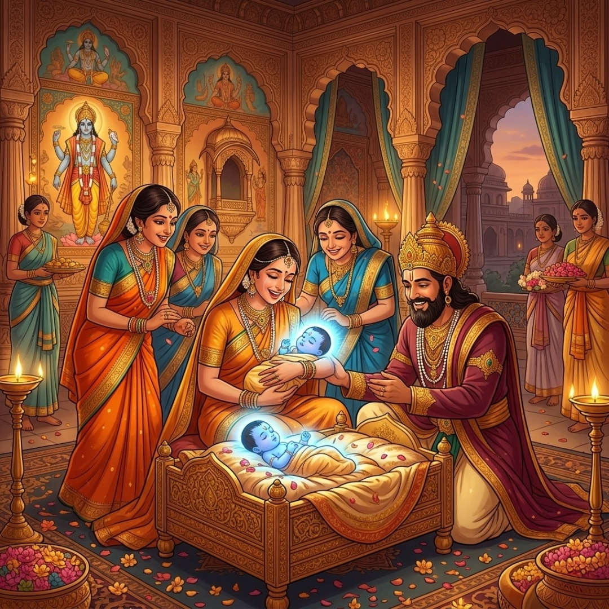
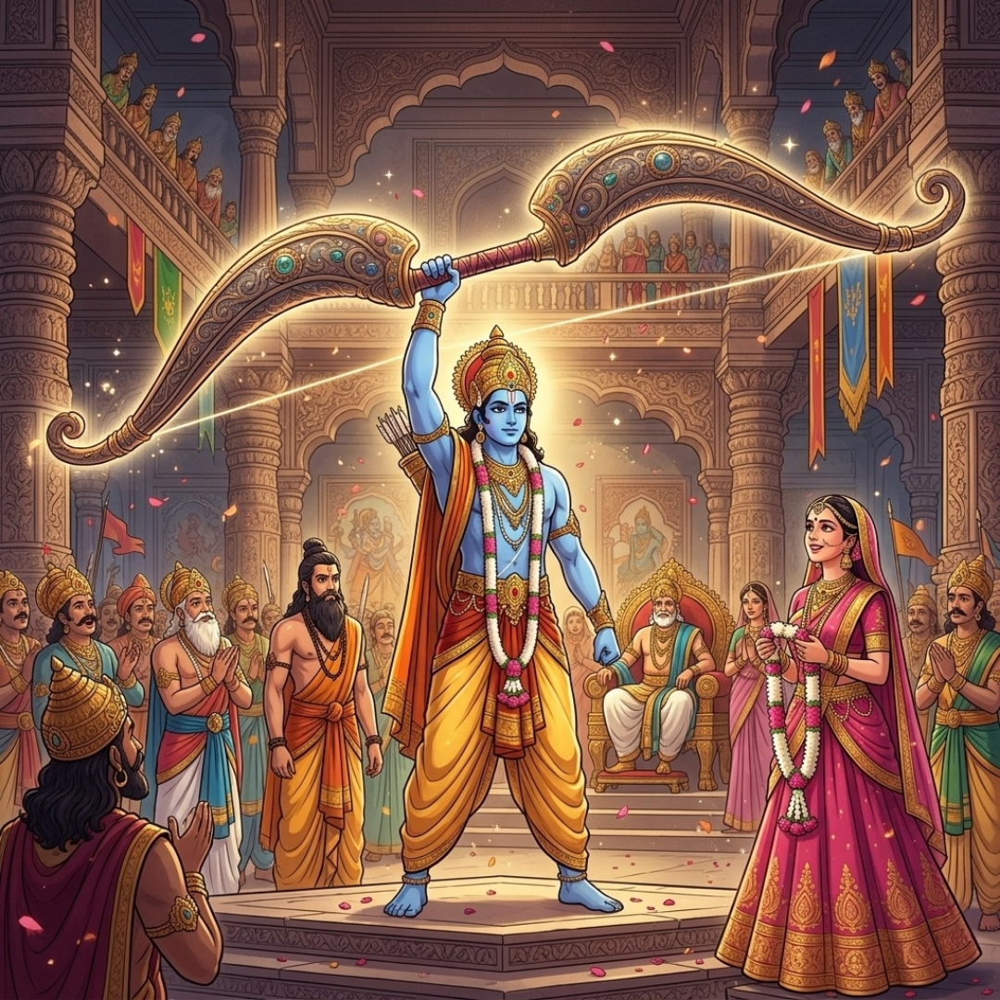
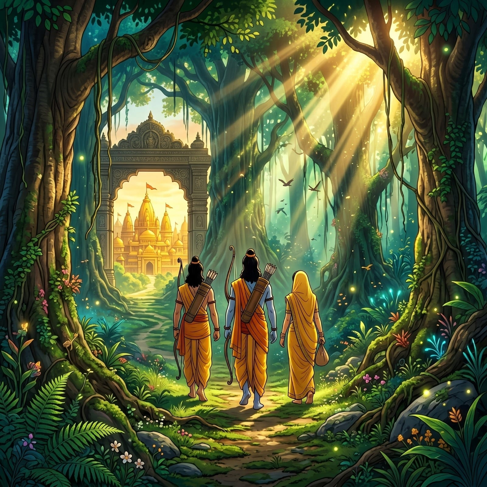
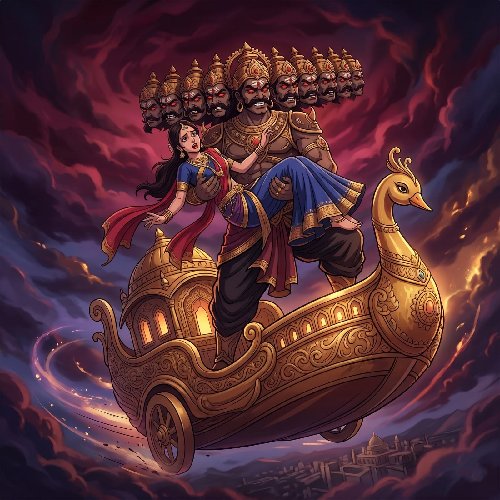
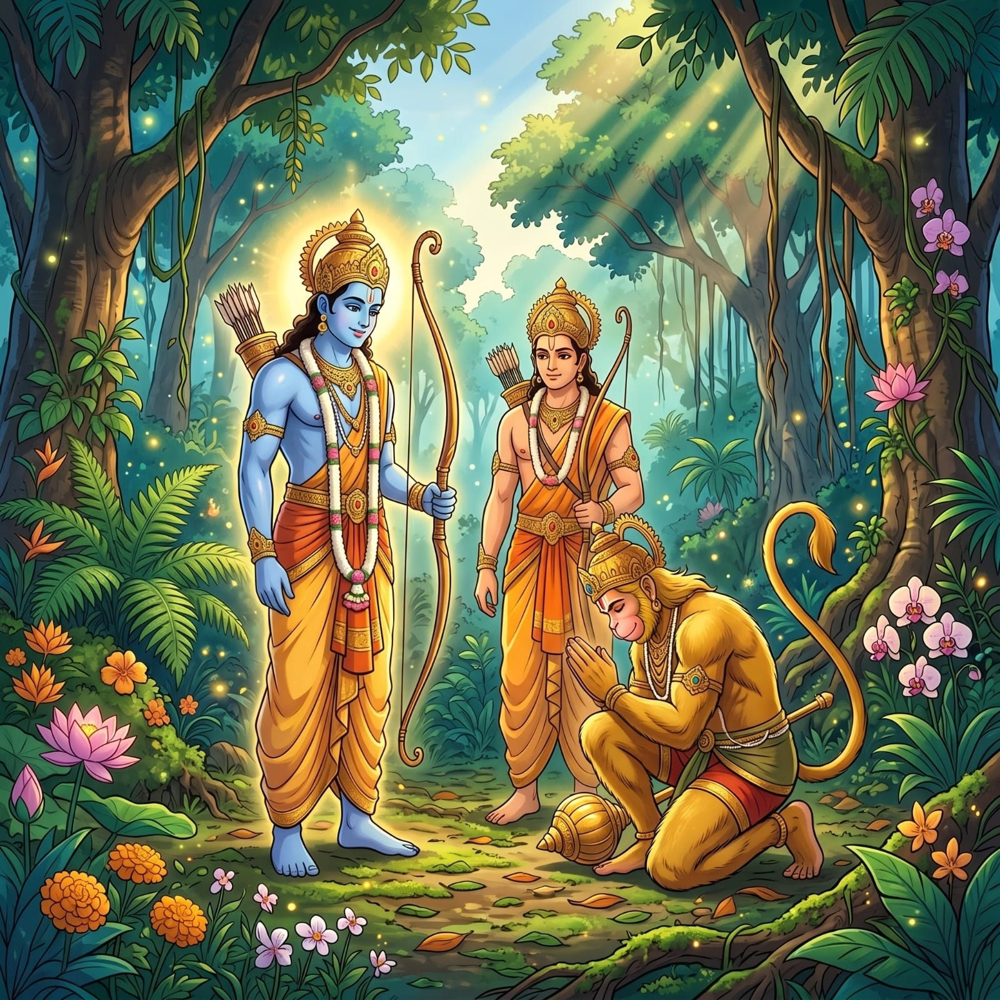
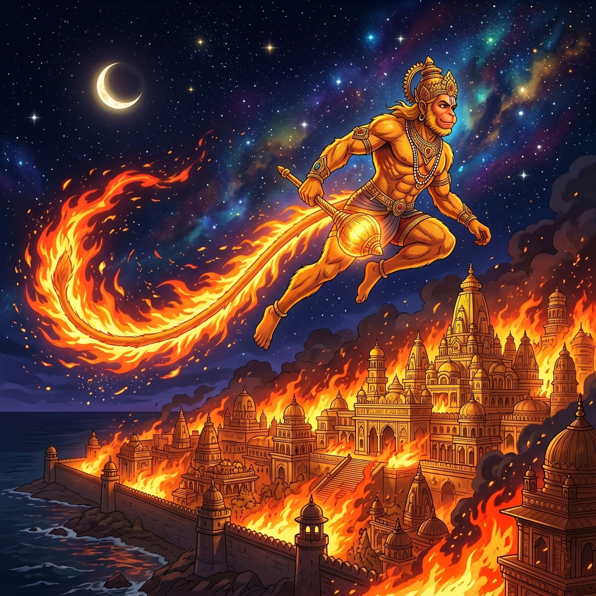
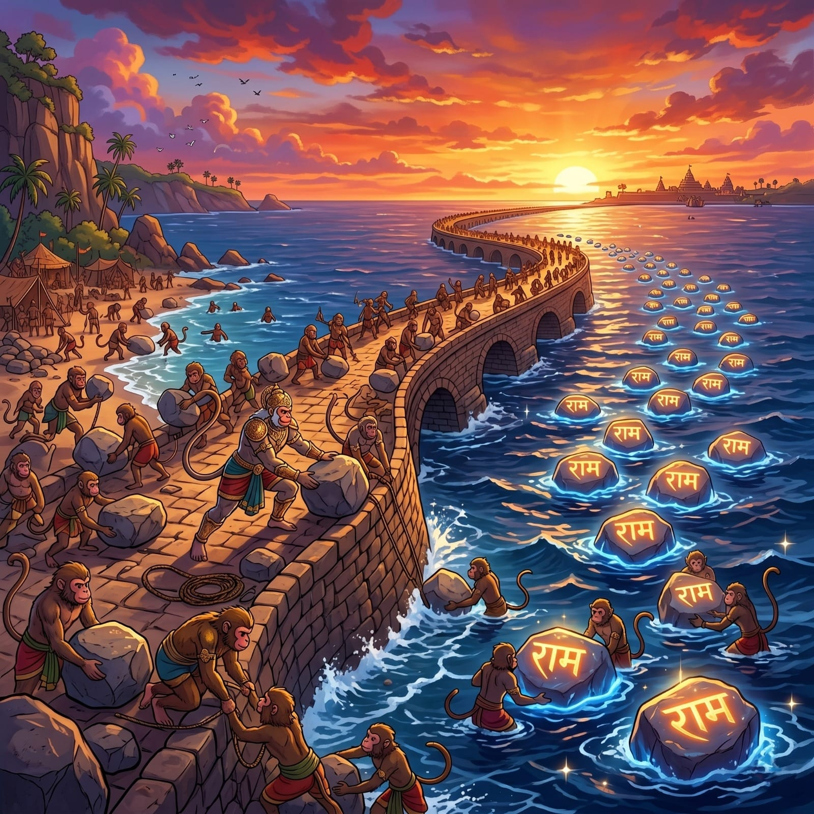
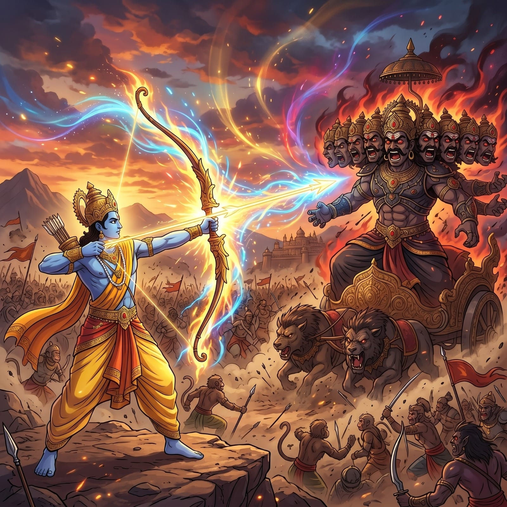
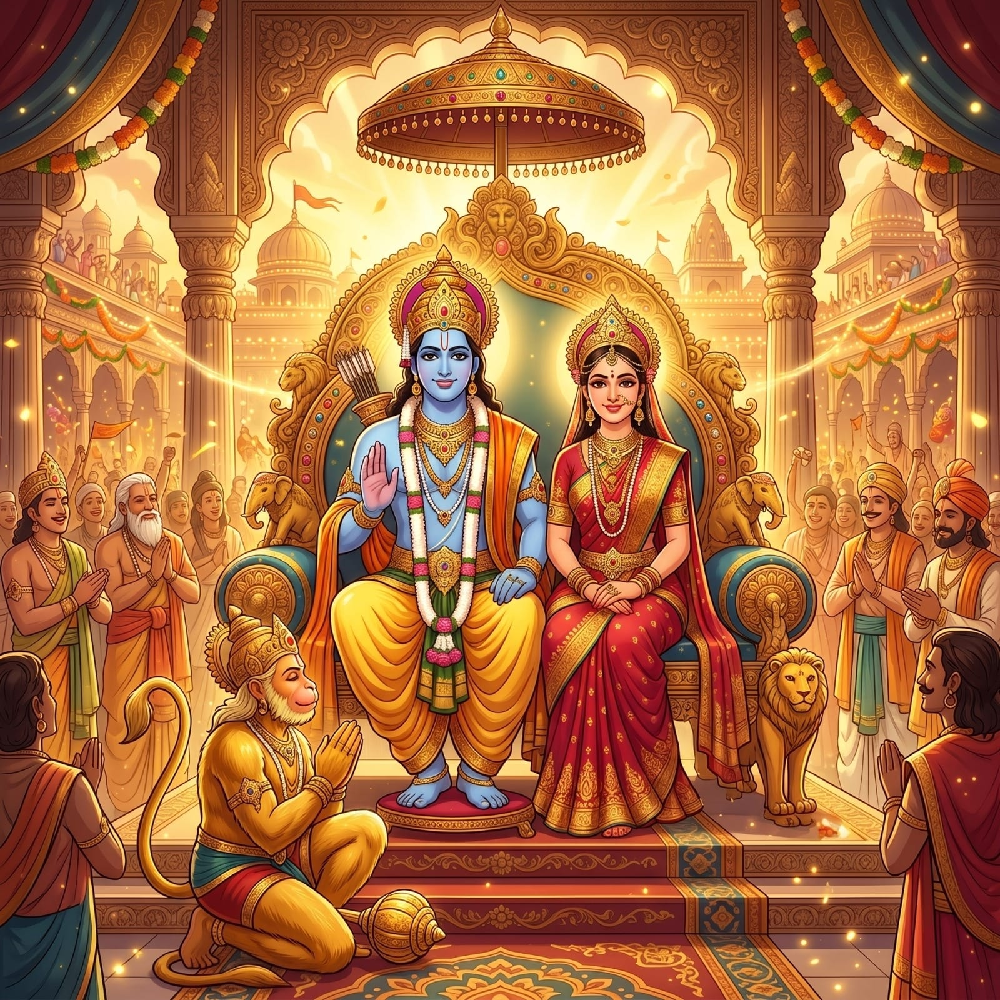

10 Important Events of Ramayanaरामायण की 10 प्रमुख घटनाएँ

1. Birth of Rama१. श्री राम जन्म
Lord Rama is born in Ayodhya to King Dasharatha and Queen Kausalya after a sacred Putrakameshti Yagna performed by Sage Rishyashringa. His birth heralds the arrival of a divine incarnation who will restore cosmic balance on earth. As the eldest of four brothers—including Bharata, Lakshmana, and Shatrughna—Rama embodies the ultimate perfection of human virtues from his very childhood, setting the standard for a righteous life.महर्षि ऋष्यश्रृंग द्वारा किए गए पुत्रकामेष्टि यज्ञ के बाद अयोध्या में राजा दशरथ और रानी कौशल्या के यहाँ भगवान राम का जन्म होता है। उनका जन्म एक दिव्य अवतार के आगमन का संकेत देता है जो पृथ्वी पर ब्रह्मांडीय संतुलन बहाल करेगा। भरत, लक्ष्मण और शत्रुघ्न सहित चार भाइयों में सबसे बड़े होने के नाते, राम बचपन से ही मानवीय गुणों की पूर्णता के प्रतीक हैं, जो एक धर्मपरायण जीवन का मानक स्थापित करते हैं।
✦ Values:✦ मूल्य: Joy, Hope, Divine Grace, and the promise of Dharma's restoration.हर्ष, आशा, दिव्य कृपा और धर्म की पुनर्स्थापना का वचन।

2. Sita Swayamvar२. सीता स्वयंवर
At the court of King Janaka in Mithila, Rama lifts, strings, and shatters the divine, immensely heavy bow of Lord Shiva—a feat no other mighty king or prince could accomplish. This extraordinary display of strength and humility wins the hand of Princess Sita. This moment marks the sacred union of two divine ideals: absolute righteousness and unwavering devotion, sealing a bond that would withstand the ultimate tests of time and destiny.मिथिला में राजा जनक के दरबार में, राम भगवान शिव के दिव्य और अत्यंत भारी धनुष को उठाकर तोड़ते हैं—एक ऐसा कार्य जो कोई अन्य शक्तिशाली राजा या राजकुमार नहीं कर सका। शक्ति और विनम्रता का यह असाधारण प्रदर्शन राजकुमारी सीता का हाथ जीतता है। यह क्षण दो दिव्य आदर्शों: पूर्ण धर्म और अटूट भक्ति के पवित्र मिलन का प्रतीक है, जो एक ऐसे बंधन पर मुहर लगाता है जो समय और भाग्य की अंतिम परीक्षाओं का सामना करेगा।
✦ Values:✦ मूल्य: Strength, Humility, the Sanctity of a Sacred Union, and proving worth through action.शक्ति, विनम्रता, पवित्र मिलन की पवित्रता, और कर्म द्वारा योग्यता साबित करना।

3. Rama's Exile (Vanvas)३. राम का वनवास
On the very eve of his much-anticipated coronation, Rama is abruptly banished to the treacherous Dandakaranya forest for 14 years due to Queen Kaikeyi's boons. Without a single word of protest, sorrow, or anger, Rama accepts the decree with a serene smile to honor his father's solemn word. His devoted wife Sita and intensely loyal brother Lakshmana voluntarily join him, embodying the supreme spirit of sacrifice, solidarity, and duty above royal comfort.बहुप्रतीक्षित राज्याभिषेक की पूर्व संध्या पर, रानी कैकेयी के वरदानों के कारण राम को अचानक 14 वर्षों के लिए दंडकारण्य वन में निर्वासित कर दिया जाता है। बिना किसी विरोध, दुख या क्रोध के, राम अपने पिता के वचन का सम्मान करने के लिए शांत मुस्कान के साथ आदेश को स्वीकार करते हैं। उनकी समर्पित पत्नी सीता और निष्ठावान भाई लक्ष्मण शाही सुख से ऊपर कर्तव्य और त्याग की सर्वोच्च भावना को मूर्त रूप देते हुए स्वेच्छा से उनके साथ जाते हैं।
✦ Values:✦ मूल्य: Adherence to Dharma, Filial Obedience, and Noble Sacrifice even at great personal cost.धर्म का पालन, पितृ आज्ञापालन, और व्यक्तिगत कष्ट पर भी महान त्याग।
4. The Golden Deer (Maya)४. स्वर्ण मृग प्रसंग
The deceptive demon Maricha, acting under Ravana's sinister orders, transforms into a mesmerizing, magically radiant golden deer to lure Rama and Lakshmana away from the hermitage. Despite Lakshmana's astute warnings of foul play, Sita insists on having the deer, and the tragic deception unfolds. This haunting episode serves as a timeless allegory of how Maya (illusion) and unchecked desire can dangerously cloud the judgment of even the wisest and purest minds.रावण के नापाक आदेशों के तहत काम करने वाला मायावी राक्षस मारीच, राम और लक्ष्मण को कुटिया से दूर ले जाने के लिए एक मंत्रमुग्ध करने वाले, जादुई सुनहरे हिरण में बदल जाता है। लक्ष्मण की स्पष्ट चेतावनी के बावजूद, सीता हिरण की जिद करती हैं, और दुखद छल सामने आता है। यह प्रसंग इस बात का एक शाश्वत रूपक है कि कैसे माया और अनियंत्रित इच्छा सबसे बुद्धिमान और शुद्ध दिमाग के निर्णय को भी खतरनाक रूप से धुंधला कर सकती है।
✦ Values:✦ मूल्य: Beware of Maya (Illusion), the importance of Caution, and the dangers of unfulfilled desires.माया (भ्रम) से सावधान रहें, सतर्कता का महत्व और अधूरी इच्छाओं के खतरे।

5. Abduction of Sita (Sita Haran)५. सीता हरण
While Rama and Lakshmana are drawn far away into the deep forest, Ravana—disguised cunningly as a humble mendicant—breaches the protective boundary (Lakshman Rekha). He abducts a vulnerable Sita by force and carries her across the skies to his golden island kingdom of Lanka. This egregious act of adharma (unrighteousness) triggers the central, world-shaking conflict of the epic, demonstrating that even the mightiest rulers inevitably fall when blinded by colossal ego, lust, and unchecked pride.जब राम और लक्ष्मण घने जंगल में दूर चले जाते हैं, रावण—एक विनम्र संन्यासी के रूप में चालाकी से भेष बदलकर—सुरक्षा रेखा (लक्ष्मण रेखा) को पार करता है। वह बलपूर्वक सीता का हरण करता है और उन्हें अपने सोने के द्वीप राज्य लंका ले जाता है। अधर्म का यह घोर कार्य महाकाव्य के केंद्रीय, दुनिया को हिला देने वाले संघर्ष को जन्म देता है, यह दर्शाता है कि सबसे शक्तिशाली शासक भी अंततः तब गिरते हैं जब वे विशाल अहंकार, वासना और अनियंत्रित गौरव से अंधे हो जाते हैं।
✦ Values:✦ मूल्य: The eternal Conflict of Good vs. Evil, and how Arrogance and Lust lead to inevitable downfall.अच्छाई और बुराई का शाश्वत संघर्ष, और अहंकार और वासना अनिवार्य पतन की ओर ले जाते हैं।

6. Meeting Hanuman & The Alliance६. हनुमान मिलन और गठबंधन
Wandering in anguish, Rama and Lakshmana meet the mighty Vanara warrior Hanuman and the exiled monkey-king Sugriva in the dense forests of Kishkindha. Hanuman's pure, selfless devotion, immense physical strength, and brilliant diplomatic intelligence make him the greatest and most reliable ally in history. His legendary leap across the ocean to find Sita in Lanka stands as an unsurpassed feat of Bhakti (devotion), bridging the gap between the mortal and the divine.पीड़ा में भटकते हुए, राम और लक्ष्मण किष्किंधा के घने जंगलों में शक्तिशाली वानर योद्धा हनुमान और निर्वासित वानर-राजा सुग्रीव से मिलते हैं। हनुमान की शुद्ध, निस्वार्थ भक्ति, अपार शारीरिक शक्ति और शानदार कूटनीतिक बुद्धि उन्हें इतिहास का सबसे महान और विश्वसनीय सहयोगी बनाती है। लंका में सीता को खोजने के लिए महासागर के पार उनकी पौराणिक छलांग भक्ति का एक नायाब कारनामा है, जो नश्वर और परमात्मा के बीच की खाई को पाटता है।
✦ Values:✦ मूल्य: True Friendship, Selfless Loyalty, and the unstoppable Power of pure Devotion (Bhakti).सच्ची मित्रता, निःस्वार्थ निष्ठा, और शुद्ध भक्ति की अजेय शक्ति।

7. Burning of Lanka (Lanka Dahan)७. लंका दहन
Having leapt across the vast ocean, Hanuman locates a captive Sita in the sorrowful Ashoka Vatika and delivers Rama's ring as a message of hope. Willingly captured by Ravana's arrogant forces, Hanuman calmly allows them to set his cloth-wrapped tail on fire. He then brilliantly uses this very fire to leap from roof to roof, burning the golden city of Lanka to ashes. This dramatic episode is one of literature's most spectacular displays of courage, psychological warfare, and divine retribution.विशाल महासागर को पार करने के बाद, हनुमान अशोक वाटिका में बंदी सीता को खोजते हैं और आशा के संदेश के रूप में राम की अंगूठी देते हैं। रावण की अहंकारी सेना द्वारा स्वेच्छा से पकड़े जाने पर, हनुमान शांति से उन्हें अपनी कपड़े से लिपटी पूंछ में आग लगाने देते हैं। फिर वह इसी आग का उपयोग छतों पर छलांग लगाने और लंका की सुनहरी नगरी को राख में बदलने के लिए करते हैं। यह नाटकीय प्रसंग साहित्य के साहस, मनोवैज्ञानिक युद्ध और दैवीय प्रतिशोध के सबसे शानदार प्रदर्शनों में से एक है।
✦ Values:✦ मूल्य: Extraordinary Courage, Strategic Intelligence, and fulfilling one's Duty against all odds.असाधारण साहस, रणनीतिक बुद्धि, और सभी बाधाओं के विरुद्ध अपने कर्तव्य को पूरा करना।

8. Building Ram Setu (The Bridge)८. राम सेतु निर्माण
Facing an impassable, turbulent ocean, the entire Vanara (monkey) army unites with absolute, unwavering purpose. Guided by the engineering genius of Nala and Nila, they work tirelessly to build a massive, floating bridge of heavy stones across the sea to Lanka. Each stone, inscribed with Rama's sacred name, miraculously floats upon the water. This stands as an extraordinary historical feat of collective faith, spectacular engineering ingenuity, and devoted, harmonious teamwork overcoming impossible odds.एक अगम्य, अशांत महासागर का सामना करते हुए, पूरी वानर सेना पूर्ण और अटूट उद्देश्य के साथ एकजुट होती है। नल और नील की इंजीनियरिंग प्रतिभा से निर्देशित होकर, वे लंका तक समुद्र के पार भारी पत्थरों का एक विशाल, तैरता हुआ पुल बनाने के लिए अथक प्रयास करते हैं। राम के पवित्र नाम से खुदा हुआ प्रत्येक पत्थर चमत्कारिक रूप से पानी पर तैरता है। यह सामूहिक विश्वास, शानदार इंजीनियरिंग कौशल और असंभव बाधाओं पर काबू पाने वाले समर्पित, सामंजस्यपूर्ण टीम वर्क की एक असाधारण ऐतिहासिक उपलब्धि है।
✦ Values:✦ मूल्य: The power of Teamwork, Engineering excellence, and that collective Faith can move mountains.सामूहिक कार्य की शक्ति, इंजीनियरिंग उत्कृष्टता, और सामूहिक विश्वास पहाड़ हिला सकता है।

9. The Slaying of Ravana९. रावण वध
After an exhausting, cosmic battle lasting many gruesome days—where advanced celestial weapons clashed and great warriors fell—Rama finally confronts the seemingly invincible, ten-headed demon king Ravana. Invoking the ultimate Brahmastra gifted by the great Sage Agastya, Rama pierces Ravana's heart. The great war of Lanka definitively ends with the resounding triumph of righteousness and the joyous liberation of Sita, proving unequivocally that absolute goodness, no matter how severely tested, always prevails over tyranny.कई भीषण दिनों तक चलने वाले एक थका देने वाले, ब्रह्मांडीय युद्ध के बाद—जहां उन्नत खगोलीय हथियारों की टक्कर हुई और महान योद्धा गिरे—राम अंततः अजेय लगने वाले, दस सिर वाले राक्षस राजा रावण का सामना करते हैं। महान ऋषि अगस्त्य द्वारा दिए गए परम ब्रह्मास्त्र का आह्वान करते हुए, राम रावण के हृदय को भेद देते हैं। लंका का महान युद्ध धर्म की शानदार जीत और सीता की आनंदमय मुक्ति के साथ निश्चित रूप से समाप्त होता है, जो स्पष्ट रूप से साबित करता है कि पूर्ण अच्छाई, चाहे कितनी भी कड़ी परीक्षा क्यों न हो, हमेशा अत्याचार पर विजय प्राप्त करती है।
✦ Values:✦ मूल्य: The ultimate Triumph of Righteousness over Evil, and that Justice, though delayed, is never denied.बुराई पर अच्छाई की अंतिम विजय, और न्याय, हालांकि विलंबित, कभी नकारा नहीं जाता।

10. Return to Ayodhya & Ram Rajya१०. अयोध्या वापसी और राम राज्य
Triumphant and reunited, Rama, Sita, and Lakshmana return to the illuminated city of Ayodhya in the magnificent, thought-driven Pushpaka Vimana after successfully completing 14 arduous years of exile. He is greeted by an ecstatic, weeping kingdom and is grandly coronated as the supreme King. His glorious rule—universally revered as 'Ram Rajya'—is remembered as the ultimate golden age: an era of flawless, impartial justice, universal prosperity, profound peace, and harmonious governance that every civilization throughout history profoundly aspires to achieve.विजयी और पुनर्मिलन के बाद, राम, सीता और लक्ष्मण 14 कठिन वर्षों के वनवास को सफलतापूर्वक पूरा करने के बाद शानदार पुष्पक विमान में अयोध्या की जगमगाती नगरी में लौटते हैं। एक भावविभोर राज्य द्वारा उनका स्वागत किया जाता है और उन्हें सर्वोच्च राजा के रूप में ताज पहनाया जाता है। उनके गौरवशाली शासन को—जिसे सार्वभौमिक रूप से 'राम राज्य' के रूप में जाना जाता है—परम स्वर्णिम युग के रूप में याद किया जाता है: दोषरहित, निष्पक्ष न्याय, सार्वभौमिक समृद्धि, गहरी शांति और सामंजस्यपूर्ण शासन का एक युग जिसे प्राप्त करने की हर सभ्यता गहराई से आकांक्षा करती है।
✦ Values:✦ मूल्य: Justice, Universal Prosperity, Compassionate Leadership, and an Ideal of Governance for all ages.न्याय, सार्वभौमिक समृद्धि, करुणामय नेतृत्व और सभी युगों के लिए शासन का आदर्श।
🏹 Why the Ramayana Still Matters🏹 रामायण आज भी क्यों प्रासंगिक है
The Ramayana is far more than a story of war and reunion. It is an eternal manual for living — a guide on how to be a son, a spouse, a leader, and a human being. Its values transcend religion, geography, and time, offering wisdom that is as vital in the 21st century as it was when Sage Valmiki first composed it.रामायण युद्ध और पुनर्मिलन की एक कहानी से कहीं अधिक है। यह जीवन जीने की एक शाश्वत पुस्तिका है — एक पुत्र, पति, नेता और इंसान होने का मार्गदर्शन। इसके मूल्य धर्म, भूगोल और समय से परे हैं।
⚖️
Ethical Leadershipनैतिक नेतृत्व
Rama's rule is the gold standard — a king who renounces personal comfort for the sake of his subjects. Leaders today can learn: power is a responsibility, not a privilege.राम का शासन स्वर्णिम मानक है — एक राजा जो अपनी प्रजा के लिए व्यक्तिगत सुख का त्याग करता है। आज के नेता सीख सकते हैं: शक्ति एक जिम्मेदारी है, विशेषाधिकार नहीं।
🏡
Family & Dutyपरिवार और कर्तव्य
Every relationship in the Ramayana — son, father, husband, brother — is depicted with honour and sacrifice. It reminds us that family bonds, upheld with integrity, are the bedrock of any society.रामायण में हर रिश्ता — पुत्र, पिता, पति, भाई — सम्मान और त्याग के साथ दर्शाया गया है। यह हमें याद दिलाता है कि परिवार के बंधन किसी भी समाज की नींव हैं।
🧘
Inner Strength & Equanimityआंतरिक शक्ति और समता
Rama faces exile, loss, and war without losing his composure. This model of equanimity — staying calm amid chaos — is the foundation of modern mindfulness and emotional intelligence.राम वनवास, हानि और युद्ध का सामना अपना संयम खोए बिना करते हैं। यह समत्व का मॉडल — अराजकता के बीच शांत रहना — आधुनिक माइंडफुलनेस की नींव है।
🤝
The Power of Alliancesगठबंधन की शक्ति
Rama's victory was built on trust, inclusion, and strategic alliances. He allied with monkeys, bears, and the reformed Vibhishana. True leadership includes, rather than excludes.राम की विजय विश्वास, समावेश और रणनीतिक गठबंधनों पर बनी थी। उन्होंने बंदरों, भालुओं और सुधरे हुए विभीषण के साथ गठबंधन किया। सच्चा नेतृत्व शामिल करता है, बाहर नहीं करता।
🦁
Courage Against Evilबुराई के विरुद्ध साहस
The Ramayana assures us that, no matter how invincible evil seems, it carries within it the seeds of its own destruction. Righteousness, patience, and courage will always prevail in the long run.रामायण हमें आश्वस्त करती है कि बुराई कितनी भी अजेय लगे, वह अपने नाश के बीज स्वयं में रखती है। धर्म, धैर्य और साहस हमेशा जीतते हैं।
🌿
Harmony with Natureप्रकृति के साथ सामंजस्य
The Ramayana's forest life, its reverence for the natural world, and the animal kingdom as equals reflect a profound ecological wisdom highly relevant to environmental challenges today.रामायण का वन जीवन, प्राकृतिक दुनिया के प्रति श्रद्धा और पशु जगत को समकक्ष मानना एक गहरी पारिस्थितिक बुद्धि को दर्शाता है।
"Rama is not merely a hero of a story — he is an ideal. The Ramayana teaches us that the greatest battles we fight are not on battlefields, but within ourselves — between our duties and our desires."
"राम केवल एक कहानी के नायक नहीं हैं — वे एक आदर्श हैं। रामायण हमें सिखाती है कि हमारी सबसे बड़ी लड़ाइयाँ युद्धक्षेत्रों पर नहीं, बल्कि हमारे भीतर लड़ी जाती हैं — हमारे कर्तव्यों और इच्छाओं के बीच।"